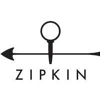

<mat-toolbar class="toolbar" color="primary">
  <mat-toolbar-row>

    <button mat-button (click)="home()">
      
    </button>
    <span style="padding-left: 4px; font-size: x-small; vertical-align: baseline;">Powered by Alfonso Lentini</span>

    <!--<a [routerLink]="['/home']">-->
      <!--<span>ZipKinUI</span>-->
    <!--</a>-->
    <span class="example-spacer"></span>
    <span>Investigate system behavior</span>
    <span class="example-spacer"></span>


    <div id="search-bar" *ngIf="showPreSearchBar()  && loggedIn()" class="mat-row">

      <!-- Search button (initiates search) -->
      <button mat-button (click)="initiateSearch()">
        <mat-icon>search</mat-icon>
        <span>Find a Trace</span>
      </button>

    </div>


    <div *ngIf="showSearchBar() && loggedIn()" class="md-toolbar-tools search-bar">

      <button mat-button class="md-icon-button" (click)="submitSearch()">
        <mat-icon>search</mat-icon>
      </button>

      <!-- Input Text -->
      <mat-form-field>
        <input matInput id="search-input" type="text" [(ngModel)]="searchTrace" />
      </mat-form-field>

      <button mat-button class="md-icon-button" (click)="endSearch()">
        <mat-icon>close</mat-icon>
      </button>
    </div>


    <button mat-button *ngIf="loggedIn(); else login" (click)="logout()">
      <mat-icon>group</mat-icon>
      <span>LOGOUT</span>
    </button>


    <ng-template #login>
      <button mat-button (click)="loggin()">
        <mat-icon>group</mat-icon>
        <span>LOGIN</span>
      </button>
    </ng-template>

  </mat-toolbar-row>
</mat-toolbar>

<router-outlet></router-outlet>

